Esquinas I–X
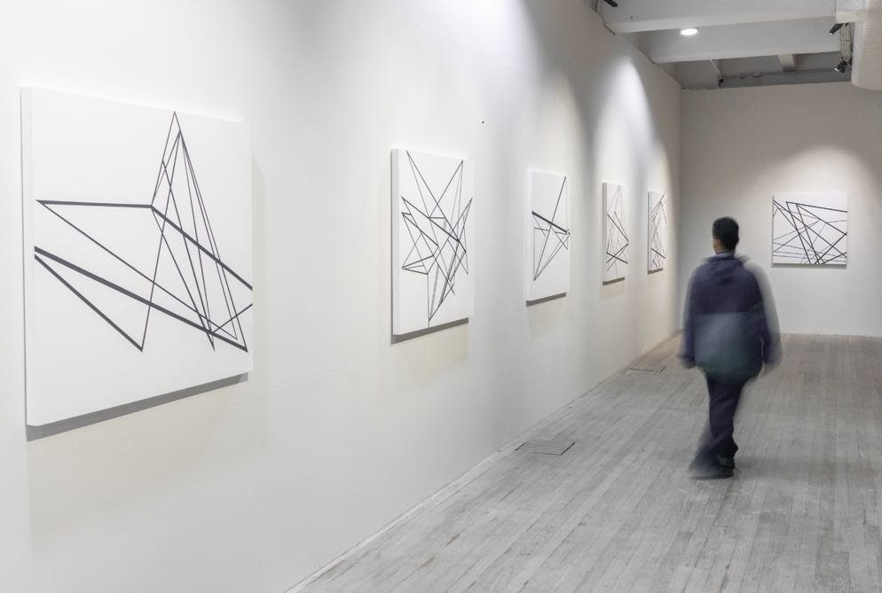
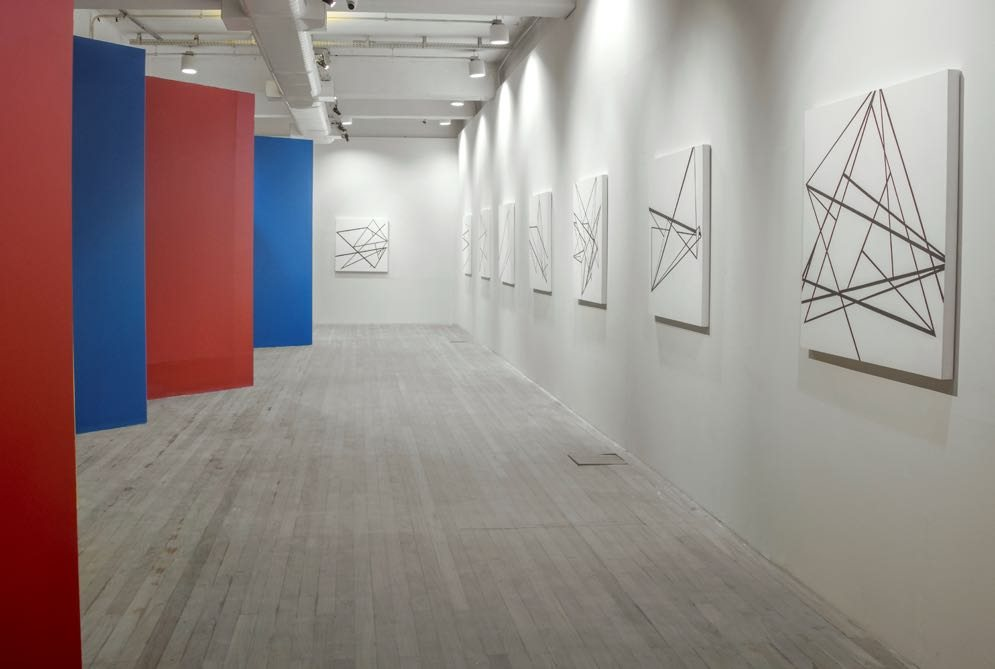
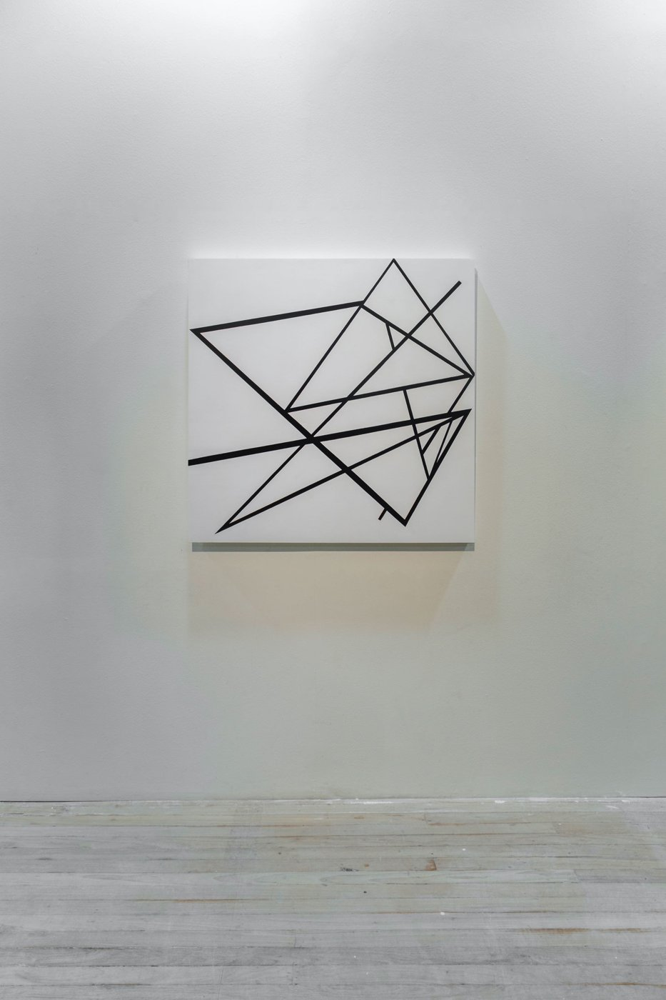
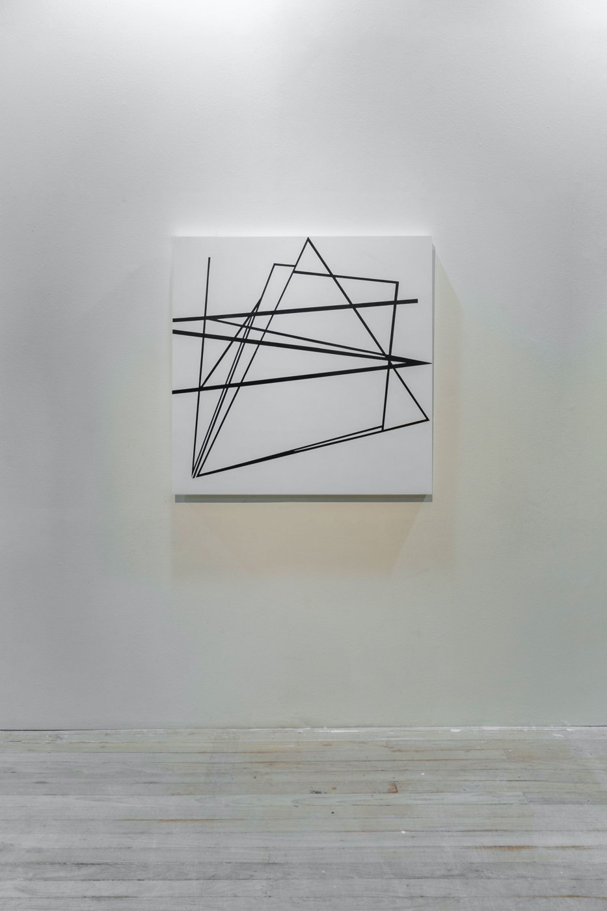
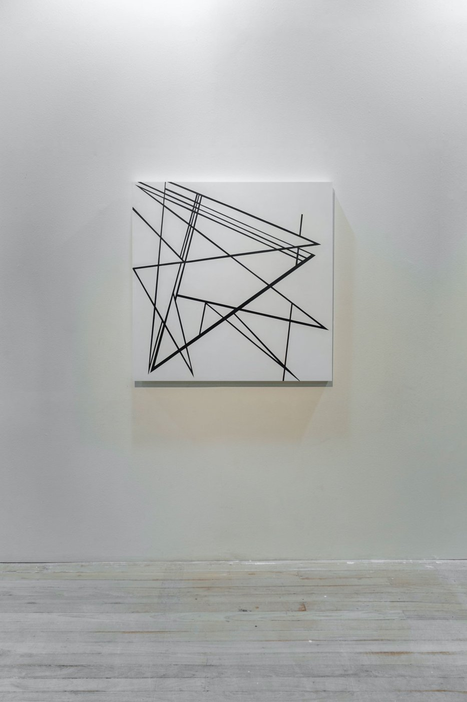
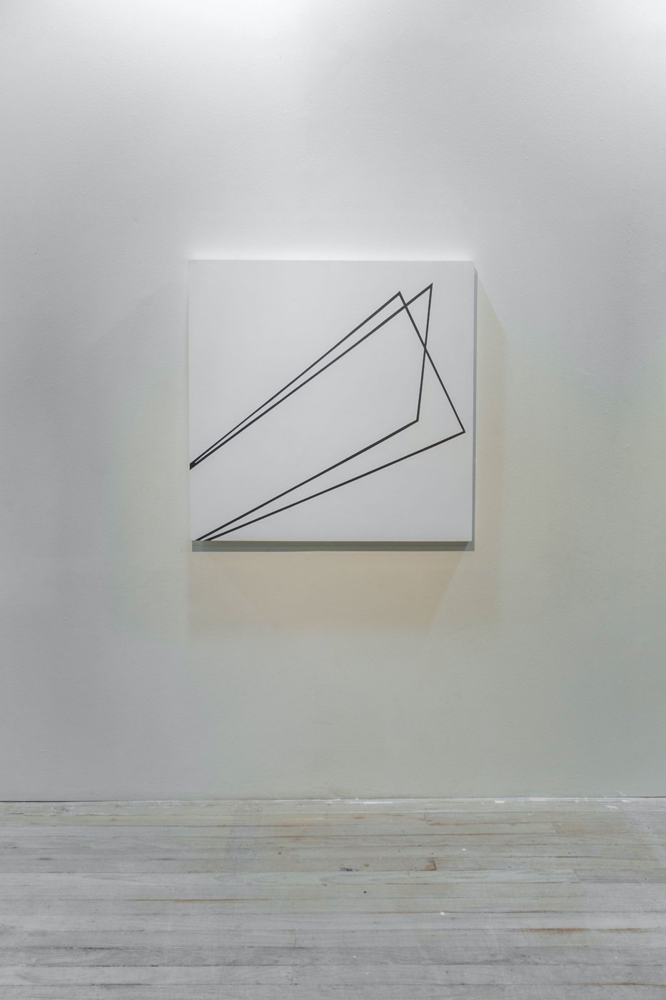
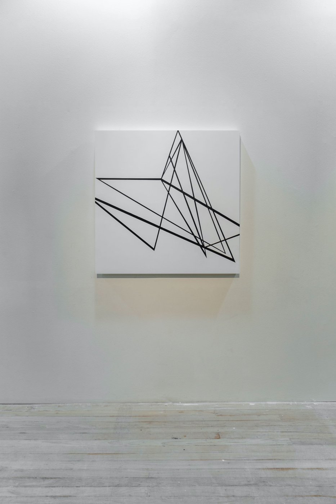
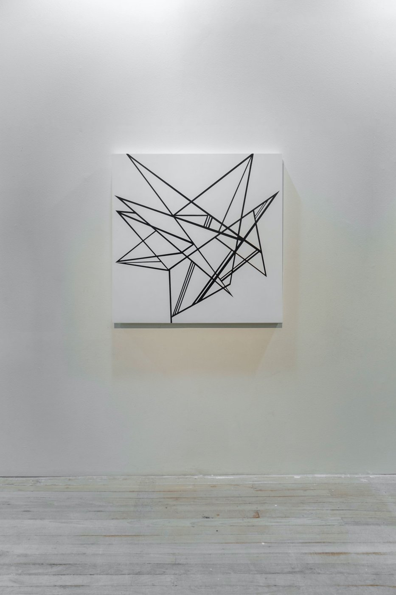
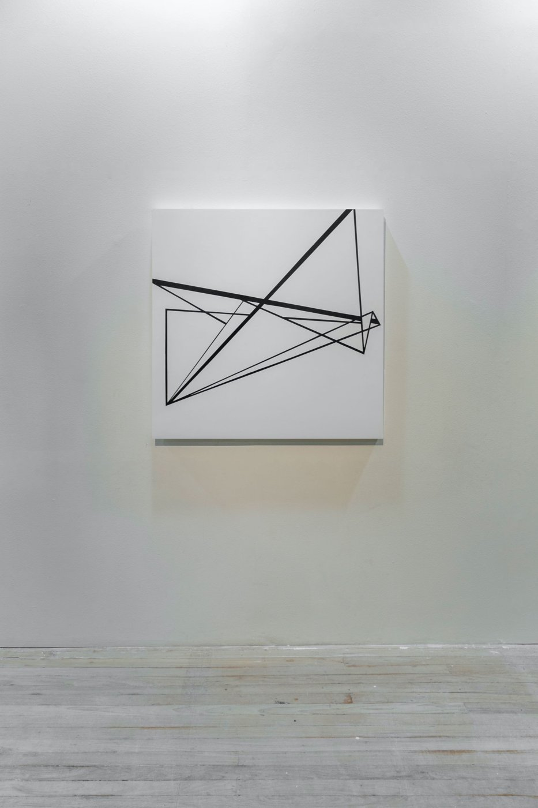
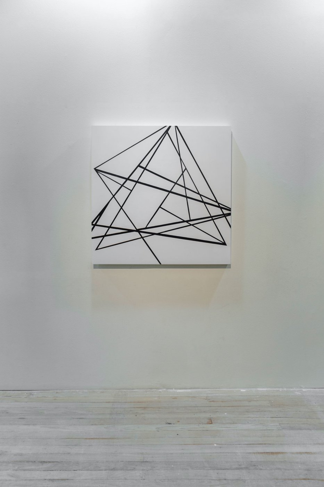
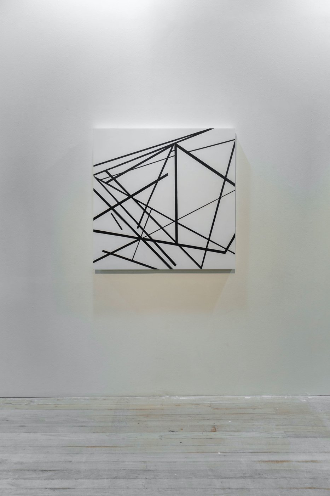
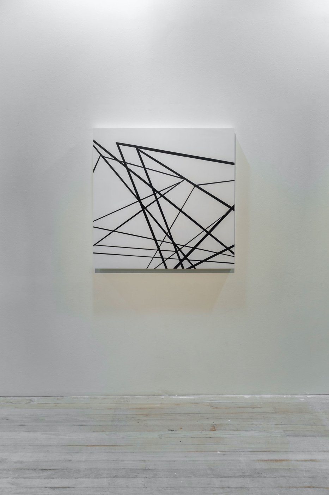
Esquinas são lugares de encontro, linhas em um mapa impossível, cruzamentos. Uma deriva entre a percepção da caminhada e o som das ruas.
As linhas se cruzam formando trajetórias que se alternam visualmente e jogam com o ponto de vista do observador: uma perspectiva simultânea que representa a multiplicidade de visões do mundo.
Texto do artista
- Materiais
- Acrílica sobre tela
- Dimensões
- 10 peças, 100 × 100 cm cada
- Local
- Futuros – Arte e Tecnologia, Rio de Janeiro
- Exposição
- A Pele do Mundo (2023)